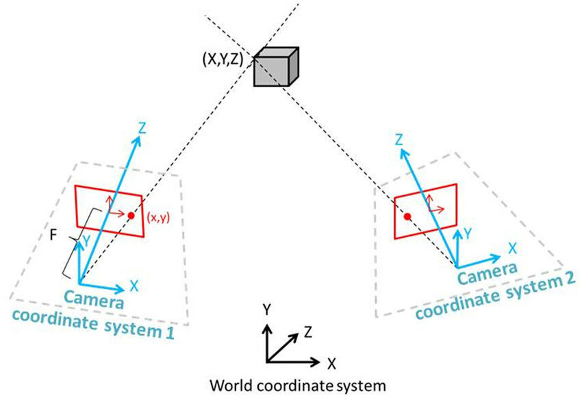

Once a pair of corresponding pixels is identified, the algorithm proceeds to triangulate the 3D point they represent.
Each 2D pixel is backprojected into the 3D world space, producing two 3D points: one in the left camera’s coordinate system and one in the right.
By subtracting the optical center of each camera from its backprojected point, two direction vectors (rays) are defined—each one pointing toward the estimated location of the 3D feature.

Basic triangulation using two cameras
These rays usually do not intersect due to noise or measurement inaccuracies, so the algorithm calculates the shortest distance between them and uses the midpoint as the estimated 3D location. The two rays are modeled as:
L1(t) = O1 + t·d1
and
L2(s) = O2 + s·d2,
where
O1 and O2 are the optical centers of the left and right cameras, and d1, d2 are the direction vectors.
A linear system is solved to find the optimal values for
t and s that minimize the distance between the rays.
All successfully triangulated points are accumulated and displayed in the 3D viewer using
GUI.ShowNewPoints.
Each point is colored using the RGB value of its corresponding pixel in the left image, providing a photorealistic point cloud of the reconstructed scene.
The algorithm continues in batches of 50 points until all points have been processed.
In a secondary test, an artificial light source was added to the scene to improve image contrast and surface definition. This resulted in more edge points being detected during the Canny step, leading to a denser set of candidate keypoints and ultimately a richer and more detailed 3D reconstruction. The improvement highlights how lighting conditions directly impact feature extraction and the quality of the final model.